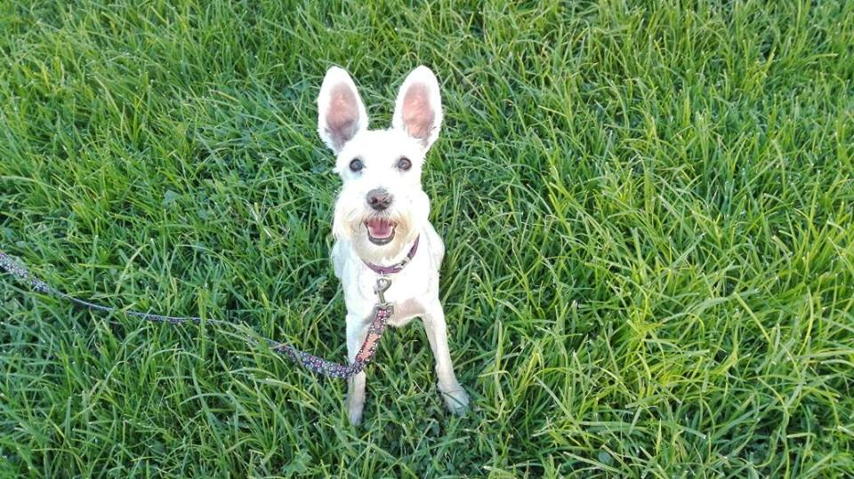

Mi nombre completo es Ariadna Angélica Güemes Estrada, pero toda mi vida me han llamado Angie. Soy originaria de Cuernavaca, o Güayaba que es como suelen referirse a los que habitamos en esa hermosa ciudad. Soy una persona que disfruta mucho aprender cosas nuevas, tanto de mis profesores como de mis compañeros, ya que la carrera esta llena de gente brillante.
Uno de mis pasatiempos favoritos durante muchos años fue el teatro. Participé en varias obras y escribí algunos monologos para algunos concursos del Tec, el representativo se llama "Expuestos". Antes de teatro uno de mis pasatiempos fue el Volleyball, me gusta mucho, sin embargo lo deje porque los horarios de volleyball son en la tarde y el sol en Cuernavaca es muy fuerte, así que hace un año intente cambiar de deporte y pasé al Gimnasio (aunque realmente no es un deporte pero ya no hay sol). Me gusta mucho ver series, mis top tres son: Breaking Bad, Game of Thrones y The Walking Dead.
Alguno de los proyectos que más he disfrutado son los siguientes.
NASA Human Exploration Rover Challenge, es una competencia auspiciada por la NASA que se lleva a cabo cada año en EU. Y debemos diseñar, manufacturar y ensamblar un ROVER que es manejado por dos pilotos (un hombre y una mujer) durante la carrera. Participé por primera vez en 2016 en el equipo de Manufactura y desde entonces participo en el proyecto. Este año estuve como lider parcial (ya que solo estuve el primer semestre del proyecto) pero mi meta es participar en el area de telemetría ya que es más enfocado a mi carrera.Este proyetco ha sido de los que más he disfrutado, en el aprendí a usar muchas maquinas del laboratorio de prototipos como la soldadora, la fresa y el torno. Hemos tenido algunos articulos publicados en periodico e internet sobre el equipo.
DEPORTED JUAN, en segundo semestre para la clase de POO realizamos un videojuego en equipo. Me gustó muchísimo pues fue el primer proyecto que tiene potencial y alcance. Descargamos la librería Monogame para programar en Visual Studio con C#. El juego trataba de Juan, quien acababa de ser deportado por Trump y debía pasar por tres niveles para regresar a México antes de que la policia lo atrapara. Mi participacion fue hacer el segundo nivel en el que tenia que correr en un desierto y saltar cactus y rocas o agacharse cuando pasaban helicopteros.
RADO, el semestre pasado un cliente contactó a un Exatex (conocido mio) para que le hiciera una APP prototipo. Me invitó a participar en el proyecto y fue la primera vez que hice un trabajo remunerado. Aprendí mucho, principalmente a romper mis propios paradigmas y darme cuenta de lo que puedo hacer. La desarrollamos en Android Studio, con el lenguaje Java. Me encargué de la parte de la interfaz y apoyé tambien en la parte de programacion.